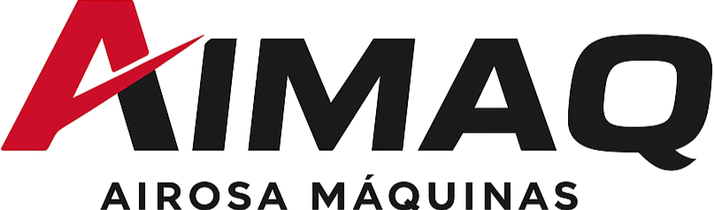
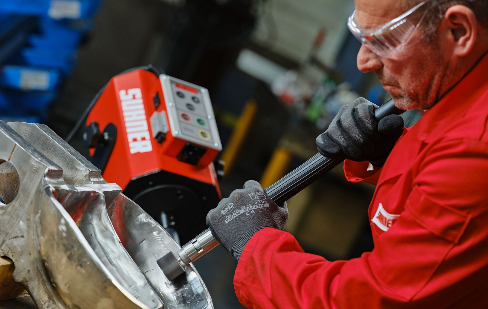

× AI SolutionsUma plataforma da Aimaq por cima do Key Invoice. Lê as vendas de 1, 3 ou 6 meses, calcula a encomenda por fornecedor e por família, e cada pessoa vê só o que lhe diz respeito. Quem compra deixa de fazer contas e passa a validar, como no sistema que o Pedro usava antes.

Uma plataforma vossa para compras, stock e permissões, com um assistente no WhatsApp.
O Key Invoice continua a faturar, sem mudar nada. A plataforma liga-se a ele pela API oficial.
Cerca de mês e meio da adjudicação até as compras passarem a ser validadas na plataforma.
Ver o protótipo juntos e validar se é esta a direção que a Aimaq quer seguir.
Tenho pessoas comigo com muita experiência, que acabam por comprar um bocadinho pela sensibilidade. Isso tem de ser ultrapassado.
Com 106.000 artigos e 40 fornecedores, gerir tudo de cabeça é humanamente difícil.
Pedro AirosaO Key Invoice dá-nos tudo o que queremos. Falha nesta gestão. Até é barato demais para aquilo que nos dá.
Não é para deitar fora. É para completar onde ele não chega: previsão de compras.
Pedro AirosaTenho seis pessoas internas que todas têm acesso aos preços de custo. E eu não quero isso.
A parte comercial sem acesso a custos, o armazém sem acesso a outras áreas.
Pedro AirosaQuero fazer uma encomenda para um mês, três ou seis, e o programa dava-lhe toda essa informação.
O sistema de compras da empresa anterior, ligado ao Sage: quem comprava só tinha de analisar e ajustar.
Pedro Airosa, sobre o que já conheciaEle diz para comprar 50, mas eu sei que há aqui um cliente que de três em três meses me compra 100.
A experiência da equipa não se perde: entra na conta e fica registada.
Pedro AirosaNa China há o pagamento antecipado. É um investimento que vou ter seguramente aí a nove meses.
20.000 a 30.000 € em importação. Com o capital preso tanto tempo, cada euro de stock mal comprado pesa o dobro.
Pedro AirosaO problema não é o Key Invoice. É o que falta por cima dele.
Um ecrã só. Painel, compras, artigos, importação e permissões, com os artigos das marcas que representam.
Artigos reais dos vossos catálogos. Stocks, vendas, custos, preços e clientes ilustrativos: os reais vêm do Key Invoice.
No WhatsApp, por texto ou mensagem de voz. Responde com os dados da plataforma e respeita o perfil de quem pergunta.
Valores ilustrativos. O assistente responde sempre com os números reais do Key Invoice.
Não há dois programas para abrir: a equipa trabalha na plataforma, e ela fala com o Key Invoice.
O Key Invoice tem uma API própria para integrações, com documentação gratuita: artigos, stocks, clientes, encomendas e documentos. No levantamento confirmamos que a encomenda a fornecedor entra como hoje a criam à mão.
Faturas, IVA e tudo o que é legal continuam no Key Invoice, como hoje. Não fazemos software de faturação: fazemos o que falta por cima dele.
Se fizer sentido trocar de programa de faturação, a plataforma liga-se ao próximo. As regras, os perfis e o histórico ficam vossos.
Preferimos dizer isto agora do que prometer o que não se cumpre.
Com os 250.000 € que nos deu. Mexa nos valores.
Não é dinheiro que se ganha. É dinheiro que deixa de estar parado na prateleira e pode ir para a importação.
Ligação à API do Key Invoice, regras por fornecedor (prazos, caixas, mínimos) e os perfis da equipa.
A plataforma, o cálculo das compras, as permissões, o assistente e os relatórios no WhatsApp.
As propostas da plataforma lado a lado com as compras de hoje. Afinamos até a equipa confiar nelas.
Quem compra abre a proposta, ajusta e valida. A encomenda segue para o Key Invoice e para o fornecedor.
Se arrancarmos em outubro, a plataforma está a trabalhar antes de chegarem os artigos da nova representação na China. Entram já com regras, em vez de se juntarem aos 106.000.
O mesmo valor para o Pedro sozinho ou para a equipa toda.